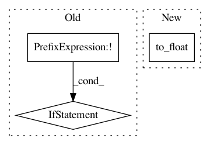

a1172cf54f3a14fb57e6b6405ce58f29ef543334,niftynet/network/dense_vnet.py,DenseVNet,layer_op,#DenseVNet#Any#Any#Any#,70
Before Change
is_training=is_training,
keep_prob=hp["p_channels_selected"])
tf.summary.scalar("skip{}".format(idx),tf.reduce_mean(tf.square(skip)),[tf.GraphKeys.SUMMARIES])
if not down is None:
tf.summary.scalar("down{}".format(idx),tf.reduce_mean(tf.square(down)),[tf.GraphKeys.SUMMARIES])
all_segmentation_features.append(image_resize(skip,output_shape))
segmentation = ConvolutionalLayer(
self.num_classes+1,
kernel_size=hp["final_kernel"],
After Change
3, [tf.GraphKeys.SUMMARIES])
image3_axial("img",
tf.minimum(255., tf.maximum(0.,
(tf.to_float(downsampled_img) / 2. + 1.) * 127.)),
3, [tf.GraphKeys.SUMMARIES])
return segmentation
In pattern: SUPERPATTERN
Frequency: 3
Non-data size: 3
Instances
Project Name: NifTK/NiftyNet
Commit Name: a1172cf54f3a14fb57e6b6405ce58f29ef543334
Time: 2017-08-24
Author: eli.gibson@gmail.com
File Name: niftynet/network/dense_vnet.py
Class Name: DenseVNet
Method Name: layer_op
Project Name: THUNLP-MT/THUMT
Commit Name: 62d2ea56ae4a090aa68baf133137982a836700bd
Time: 2018-01-25
Author: playinf@stu.xmu.edu.cn
File Name: thumt/utils/search.py
Class Name:
Method Name: create_inference_graph
Project Name: tensorflow/models
Commit Name: a1337e01db4e3a54c48d2fbd6614c772bdf0f4c5
Time: 2018-11-30
Author: lzc@google.com
File Name: research/object_detection/builders/preprocessor_builder.py
Class Name:
Method Name: build